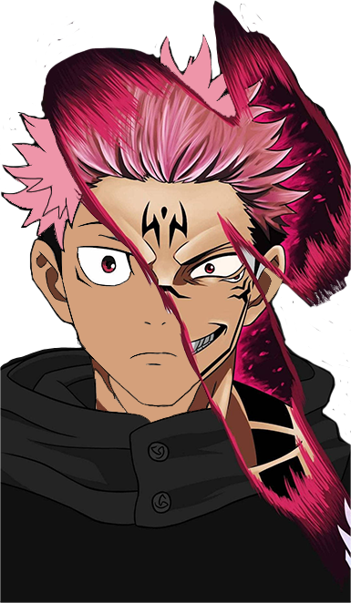

Introduction Jujutsu Kaisen Characters
YUJI / SUKUNA

yuji/sukuna
Yuji is a first-year Jujutsu Sorcerer at Tokyo Jujutsu High who is thrown into the world of sorcery after he ate a Cursed Object: a finger belonging to Ryomen Sukuna (宿儺, Sukuna), a powerful Cursed Spirit—a being manifested from Cursed Energy from the negative emotions flowing from humans.
GOJO

Gojo
Satoru Gojo (五ご条じょう悟さとる Gojō Satoru?) is one of the main protagonists of the Jujutsu Kaisen series. He is a special grade jujutsu sorcerer and widely recognized as the strongest in the world. Satoru is the pride of the Gojo Family, the first person to inherit both the Limitless and the Six Eyes in four hundred years. He works as a teacher at the Tokyo Jujutsu High and uses his influence to protect and train strong young allies.
UNFORTUNATELY....

Satoru Gojo cutted into half now....He successfully transform from Gojo(五条悟) to Half Gojo(二点五条悟)🤡